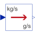

To_gpsConvert from kilogram per second to gram per second |

|
Information
This information is part of the Modelica Standard Library maintained by the Modelica Association.
This block converts the input signal from kilogram per second to gram per seconds and returns the result as output signal.
Connectors (2)
| u |
Type: RealInput Description: Connector of Real input signal to be converted |
|
|---|---|---|
| y |
Type: RealOutput Description: Connector of Real output signal containing input signal u in another unit |